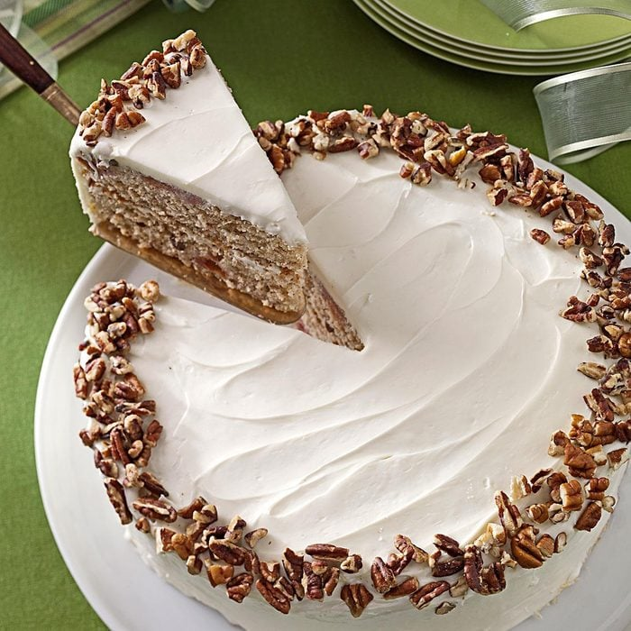

Cherry Spice Cake

Learn how to prepare a fruity Cherry Spice Cake!
Prep: 30 min.
Bake: 25 min. + cooling
16 Servings
Ingredients
- 1/2 cup butter, softened
- 1-1/2 cups sugar
- 2 large eggs
- 2 cups all-purpose flour
- 1 teaspoon ground cinnamon
- 1 teaspoon ground cloves
- 1/2 teaspoon baking soda
- 1/4 teaspoon baking powder
- 1/4 teaspoon salt
- 1 cup buttermilk
- 1 can (14-1/2 ounces) pitted tart cherries, drained
- 1/2 cup chopped pecans or walnuts
Frosting
- 1 package (8 ounces) cream cheese, softened
- 3-3/4 cups confectioners' sugar
- 1 to 2 teaspoons water
- 2 to 3 drops red food coloring, optional
- Additional chopped pecans, optional
Steps
- Line two 9-in. round baking pans with waxed paper. Grease and flour the pans and paper; set aside.
- In a large bowl, cream butter and sugar until light and fluffy. Add eggs, one at a time, beating well after each addition. Combine the flour, cinnamon, cloves, baking soda, baking powder and salt. Add to the creamed mixture alternately with buttermilk, beating well after each addition. Fold in cherries and pecans.
- Transfer batter to prepared pans. Bake at 350° for 25-30 minutes or until a toothpick inserted in the center comes out clean. Cool for 10 minutes before removing from pans to wire racks to cool completely.
- For frosting, in a large bowl, beat cream cheese until fluffy. Add confectioners’ sugar and enough water to achieve spreading consistency. Tint with food coloring if desired. Spread frosting between layers and over top and sides of cake. Garnish with additional pecans. Store in the refrigerator.
Enjoy!